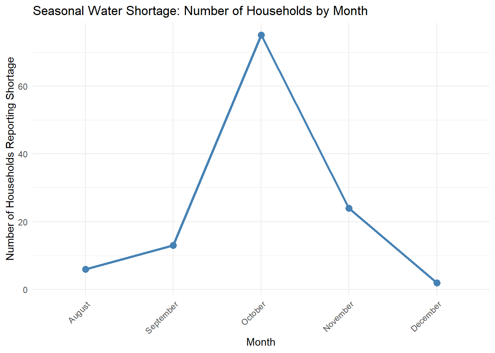

This dataset captures household-level information on water access, reliability, and user satisfaction across selected communities in Zomba and Mangochi Districts in Malawi. The data was collected on September 20, 2021, using mWater, a mobile-based data collection platform. Enumerators visited households to gather geo-referenced responses through structured digital surveys, ensuring high-quality and spatially traceable data.
The survey focused on understanding the condition and accessibility of household water sources, user satisfaction with water services, seasonal availability, and the economic aspects of water usage. It also gathered insights into household well-being and demographics relevant to water access and decision-making.
Potential Use Cases
This dataset is valuable to a wide range of stakeholders, including:
Local Government and District Water Offices – for planning water infrastructure repairs, expansions, and equitable service delivery.
NGOs and Development Partners (e.g., WaterAid, UNICEF, WASH-focused NGOs) – for identifying priority areas, targeting interventions, and measuring impact.
Policy Makers and Researchers – for analyzing rural water access trends, community resilience, and household-level satisfaction indicators.
WASH Engineers and Planners – for designing technically informed and community-responsive water systems.
Academic Institutions – for research and student projects focusing on water governance, rural development, and environmental health.
Installation
You can install the development version of waterconsumersurvey from GitHub with:
# install.packages("devtools")
devtools::install_github("openwashdata/waterconsumersurvey")
## Run the following code in console if you don't have the packages
## install.packages(c("dplyr", "knitr", "readr", "stringr", "gt", "kableExtra"))
library(dplyr)
library(knitr)
library(readr)
library(stringr)
library(gt)
library(kableExtra)
library(fmsb)Alternatively, you can download the individual datasets as a CSV or XLSX file from the table below.
- Click Download CSV. A window opens that displays the CSV in your browser.
- Right-click anywhere inside the window and select “Save Page As…”.
- Save the file in a folder of your choice.
| dataset | CSV | XLSX |
|---|---|---|
| waterconsumersurvey | Download CSV | Download XLSX |
Data
The package provides access to Household Water Access and Satisfaction Survey collected in 2021 in Zomba and Mangochi districts in Malawi.
waterconsumersurvey
The dataset waterconsumersurvey contains 423 observations and 41 variables
waterconsumersurvey |>
head(3) |>
gt::gt() |>
gt::as_raw_html()| submitted_on | latitude | longitude | gps_method | district | traditional_authority | group_village_headman | village | well_being_analysis | household_id | respondent_gender | attended_school | highest_education_qualification | marital_status | religion | main_income_source | monthly_family_income | household_size | main_water_source | waterpoint_functional_status | nonfunctional_reason | waterpoint_current_issues | waterpoint_current_problem | waterpoint_current_problem_other | water_collection_time_minutes | seasonal_water_shortage | shortage_months | daily_water_use_buckets | has_water_tariff | no_tariff_reason | no_tariff_reason_other | waterpoint_breakdown_response | willing_to_pay_for_improvement | current_tariff_kwacha | current_tariff_unknown | max_tariff_willing_to_pay | satisfaction_service_level | satisfaction_maintenance_fund | satisfaction_sanitation_hygiene | satisfaction_theft_protection | satisfaction_water_quality |
|---|---|---|---|---|---|---|---|---|---|---|---|---|---|---|---|---|---|---|---|---|---|---|---|---|---|---|---|---|---|---|---|---|---|---|---|---|---|---|---|---|
For an overview of the variable names, see the following table.
| variable_name | variable_type | description |
|---|---|---|
| submitted_on | character | Date the survey response was submitted. |
| latitude | numeric | GPS latitude of the household location. |
| longitude | numeric | GPS longitude of the household location. |
| gps_method | character | Method used to collect the GPS coordinates (e.g., phone, GPS device). |
| district | character | Name of the district where the household is located. |
| traditional_authority | character | Name of the traditional authority overseeing the area. |
| group_village_headman | character | Name of the group village headman in the household’s locality. |
| village | character | Name of the specific village where the household is located. |
| well_being_analysis | character | Categorization of household well being (e.g., poor, moderate, better off). |
| household_id | numeric | Unique identifier for the household in the survey. |
| respondent_gender | character | Gender of the person responding to the survey. |
| attended_school | character | Indicates whether the respondent has ever attended school. |
| highest_education_qualification | character | Highest level of education completed by the respondent. |
| marital_status | character | Current marital status of the respondent. |
| religion | character | Religious affiliation of the respondent. |
| main_income_source | character | Primary source of household income (e.g., farming, business, salary). |
| monthly_family_income | character | Approximate total family income per month (in local currency). |
| household_size | numeric | Total number of people living in the household. |
| main_water_source | character | Primary source of water for the household (e.g., borehole, tap, river). |
| waterpoint_functional_status | character | Functional status of the households main water point. |
| nonfunctional_reason | character | Reason why the water point is non functional, if applicable. |
| waterpoint_current_issues | character | Whether there are ongoing problems with the water point. |
| waterpoint_current_problem | character | Type of problem currently affecting the water point (e.g., broken pump, contamination). |
| waterpoint_current_problem_other | character | Specification of any other problem not captured by predefined choices. |
| water_collection_time_minutes | numeric | Round trip time (in minutes) to collect water from the source, including waiting time. |
| seasonal_water_shortage | character | Indicates if the water source becomes unavailable at certain times of the year. |
| shortage_months | character | Specific months when water shortages are experienced. |
| daily_water_use_buckets | numeric | Average number of 20 litre buckets of water used daily by the household. |
| has_water_tariff | character | Whether a tariff or user fee is charged for water use. |
| no_tariff_reason | character | Reason for not charging a tariff, if applicable. |
| no_tariff_reason_other | character | Additional explanation for why there is no tariff, if not listed in predefined options. |
| waterpoint_breakdown_response | character | Usual response or process followed when the water point breaks down. |
| willing_to_pay_for_improvement | character | Indicates if the household is willing to pay for improved water services. |
| current_tariff_kwacha | numeric | Amount of the current tariff or user fee in Malawi Kwacha. |
| current_tariff_unknown | logical | Indicates if the respondent does not know the current tariff. |
| max_tariff_willing_to_pay | numeric | Maximum amount the household is willing to pay monthly for improved water supply. |
| satisfaction_service_level | character | Level of satisfaction with the overall water service received. |
| satisfaction_maintenance_fund | character | Satisfaction with how the maintenance fund is managed by the Water Point Committee. |
| satisfaction_sanitation_hygiene | character | Satisfaction with sanitation and hygiene practices around the water point. |
| satisfaction_theft_protection | character | Satisfaction with how the water point is protected from theft and vandalism. |
| satisfaction_water_quality | character | Satisfaction with the quality of the water (e.g., taste, color, smell). |
Example
library(waterconsumersurvey)
library(dplyr)
library(ggplot2)
library(tidyr)
library(ggplot2)
library(dplyr)
# Visualization 1: Bar Chart of Waterpoint Functional Status by District
# Filter out rows where waterpoint functional status is NA,
# then group by district and functional status and count number of waterpoints
status_district <- waterconsumersurvey %>%
filter(!is.na(waterpoint_functional_status)) %>% # Exclude NA functional statuses
group_by(district, waterpoint_functional_status) %>%
summarise(count = n()) %>% # Count occurrences in each group
ungroup()
# Create a stacked bar chart showing waterpoint status distribution by district
ggplot(status_district, aes(x = district, y = count, fill = waterpoint_functional_status)) +
geom_bar(stat = "identity") + # Use counts directly for bar heights
labs(
title = "Waterpoint Functional Status by District",
x = "District",
y = "Number of Waterpoints",
fill = "Functional Status"
) +
theme_minimal() +
# Rotate x-axis labels for better readability if district names are long
theme(axis.text.x = element_text(angle = 45, hjust = 1))
# Vizualisation 2: Water Shortage Seasonality Line Chart
# Step 1: Filter households reporting seasonal water shortage
shortage_data <- waterconsumersurvey %>%
filter(seasonal_water_shortage == "Yes" & !is.na(shortage_months)) %>%
select(household_id, shortage_months)
# Step 2: Split shortage_months into separate rows per household
shortage_expanded <- shortage_data %>%
mutate(shortage_months = strsplit(as.character(shortage_months), ",")) %>%
unnest(shortage_months) %>%
mutate(shortage_months = trimws(shortage_months)) # Remove leading/trailing spaces
# Step 3: Count households by month
monthly_shortage_counts <- shortage_expanded %>%
group_by(shortage_months) %>%
summarise(households = n()) %>%
ungroup()
# Optional: Order months chronologically (adjust if months in dataset differ)
month_levels <- c("January", "February", "March", "April", "May", "June",
"July", "August", "September", "October", "November", "December")
monthly_shortage_counts$shortage_months <- factor(monthly_shortage_counts$shortage_months,
levels = month_levels,
ordered = TRUE)
# Step 4: Plot line chart
ggplot(monthly_shortage_counts, aes(x = shortage_months, y = households, group = 1)) +
geom_line(color = "steelblue", size = 1.2) +
geom_point(color = "steelblue", size = 3) +
labs(
title = "Seasonal Water Shortage: Number of Households by Month",
x = "Month",
y = "Number of Households Reporting Shortage"
) +
theme_minimal() +
theme(axis.text.x = element_text(angle = 45, hjust = 1))
License
Data are available as CC-BY.
Citation
Please cite this package using:
citation("waterconsumersurvey")
#> To cite package 'waterconsumersurvey' in publications use:
#>
#> Mhango, E. et al. (2025). waterconsumersurvey: Household Water Point
#> Satisfaction Survey Data from Malawi. R package version 0.0.0.9000.
#> https://github.com/openwashdata/waterconsumersurvey
#>
#> A BibTeX entry for LaTeX users is
#>
#> @Manual{,
#> title = {waterconsumersurvey: Household Water Point Satisfaction Survey Data from Malawi},
#> author = {Emmanuel Mhango and Feston Bwanyula and Rhodrick D. Sagawa and Fatsani Chinawa and Baleke Banda and Alex Mchotsa and Paul Kumpukwe and Derick Macheke and George Mangochi Martin and Khallen Malliot and Christopher Mwafulirwa and Tellia Billiat and Verson Chilombo and Doreen Chalira and Catherine Chapotera},
#> year = {2025},
#> note = {R package version 0.0.0.9000},
#> url = {https://github.com/openwashdata/waterconsumersurvey},
#> }